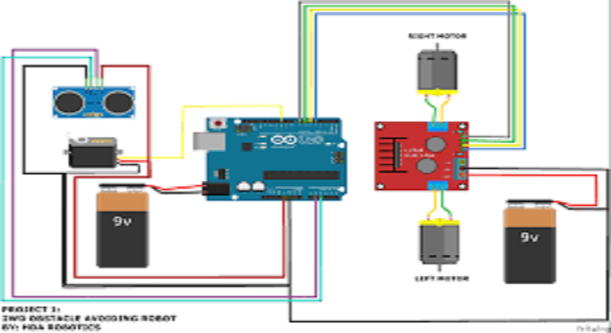

Nowadays the robot technology is trending ,invention occurs, students are taking more interest on robotics field.This project is based on the collision avoidance robot using arduino board with ultrasonic. Robot has so many types such controls manual,full automated.These robot is full automated so it follows its command if any obstacle is front it checks for the direction to continues is process. The arduino board is used for the control unit.
By building this project you will learn about:
1.Speech Recognition
2.Basics of Android App Development
3.Bluetooth Communication
4.Arduino Architecture & it's Programming
1.Arduino Board Uno R3
2.L293D Motor Shield
3.HC-SR04
4.SG90 RC Servo Motor
5.Bracket for HC-SR04
6.DC Motors and Wheel
7.Front Wheel
8.Chassis
9.Jumper Wire
10.Battery Plug 9V
11.Battery 9V
12.Glue Gun or Cable Ties
